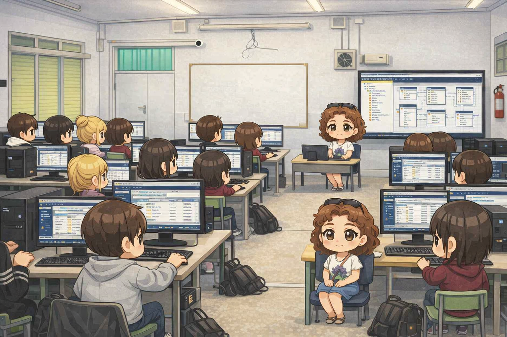
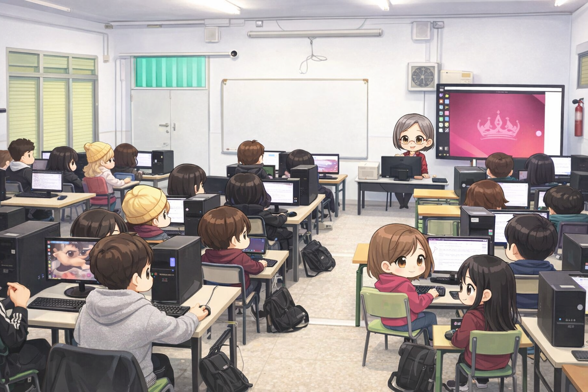
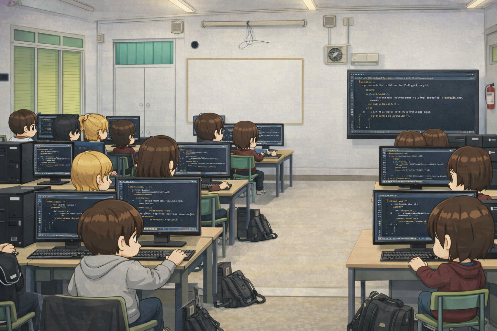

Explica cómo almacenar, organizar y consultar información de forma eficiente. Se trabaja con modelos de datos, diseño de bases de datos relacionales y el lenguaje SQL.

Funcionamiento interno de los ordenadores y sistemas operativos. Instalación, configuración y mantenimiento.

Lógica de programación y resolución de problemas. Desarrollo de aplicaciones robustas.